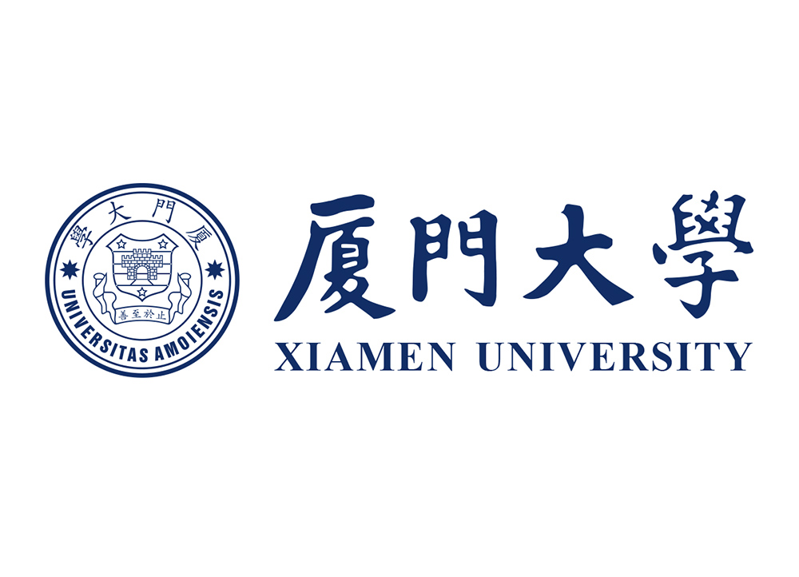

Haoyu ZHAO赵皓宇MPhil Student
AI Thrust, |
 |
Biography
I'm an MPhil student at AI Thrust, Information Hub, Hong Kong University of Science and Technology, Guangzhou, advised by Prof. Ying-Cong Chen. Before that, I received my Bachelor's degree in Automation, Xiamen University.
I am always open to research collaborations! Whether you’d like to talk about my work or explore potential partnerships, feel free to reach out.
I am actively looking for a PhD position.
Research Interests
My current research interests include Large Language Models (LLMs) and Computer Vision, with a particular focus on methodologies that use LLMs to empower Computer Vision research.
Research Topics: Multimodal LLM, LLM Agent, Computer Vision, Embodied AI
News
- [08/2024] Happy to announce that I have successfully defended my thesis and earned my MPhil degree! I'm truly grateful to everyone who supported me along this journey!
- [08/2024] Our paper was awarded an Honorable Mention by ISEDA PCs.
- [05/2024] LLM-Optic: We released our new paper LLM-Optic, come and check it out!
- [07/2023] Ref-NeuS: Our paper was selected as one of the Best Paper Candidates by ICCV PCs.
- [07/2023] Ref-NeuS: One paper was accepted to ICCV 2023 (Oral).
Selected Publications [Google Scholar]
 |
LLM-Optic: Unveiling the Capabilities of Large Language Models for Universal Visual Grounding.
Haoyu Zhao, Wenhang Ge, Ying-Cong Chen.
Arxiv Preprint
|
 |
Ref-NeuS: Ambiguity-Reduced Neural Implicit Surface Learning for Multi-View Reconstruction with Reflection.
Wenhang Ge, Tao Hu, Haoyu Zhao, Shu Liu, Ying-Cong Chen.
ICCV, 2023 | Oral, Best Paper Candidate
|
 |
Multi-objective Optimization for Football Team Member Selection.
Haoyu Zhao, Haihui Chen, Shenbao Yu, Bilian Chen.
IEEE Access, 2021 | Outstanding Undergraduate Publication Award
|
Experiences
|
University College London (UCL) Jul. 2024 - Sep. 2024 Remote Intern | Supervisor: Prof. Jun Wang |
|
|
Hong Kong University of Science and Technology (HKUST) Sep. 2022 - Aug. 2024 M.Phil. | Supervisor: Prof. Yingcong Chen |
|
|  |
Xiamen University (XMU) Sep. 2017 - Jun. 2021 B.Eng. | Supervisor: Prof. Bilian Chen |
Honors & Awards
| ICCV Best Paper Final List, top 0.2% | 2023 |
| ISEDA Honorable Mention Paper Award | 2024 |
| HKUST Postgraduate Studentship | 2022-2024 |
| Outstanding Undergraduate Publication Award | 2021 |
| Youth Innovation Fund of Xiamen | 2020 - 2021 |
| Academic Excellence Scholarship | 2017-2018, 2019-2020, 2020-2021 |
Teaching
| 2023-2024 | Spring | Teaching Assistant in UCMP 6050 Cross-disciplinary Design Thinking, HKUST |
| 2023-2024 | Fall | Teaching Assistant in RedBird MPhil Mentoring, HKUST |